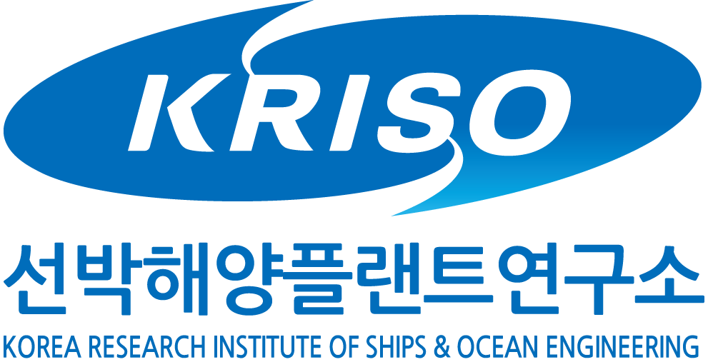
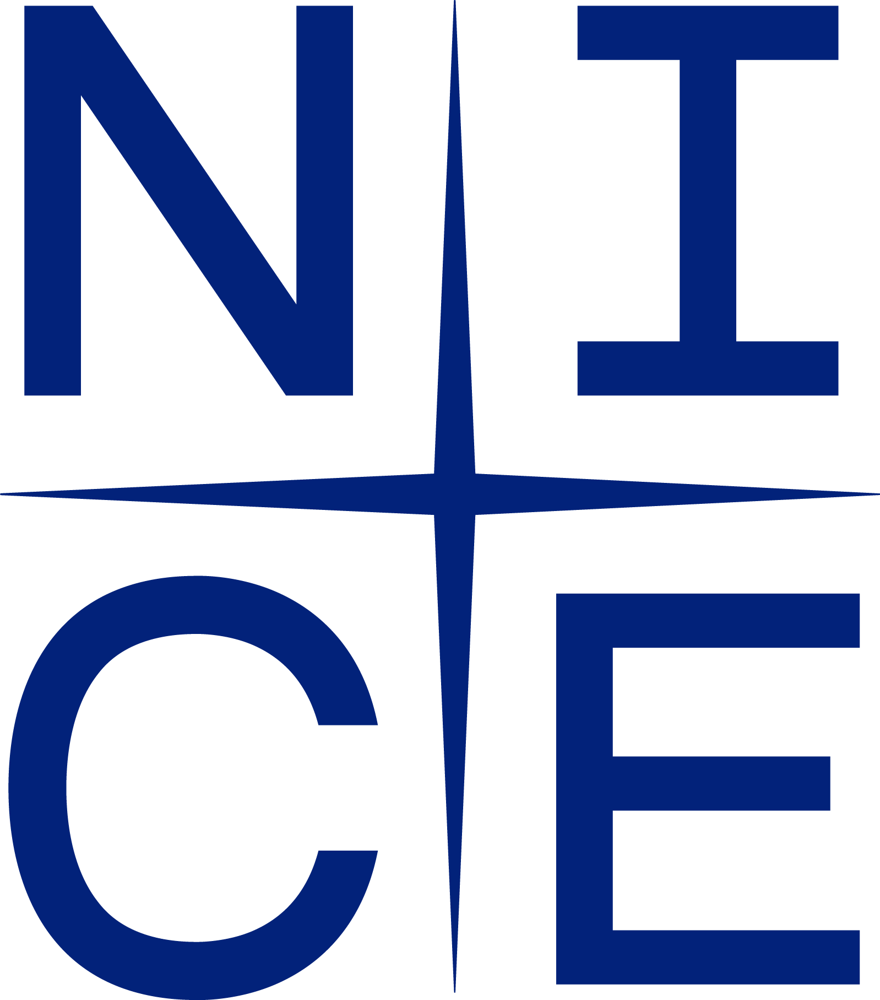
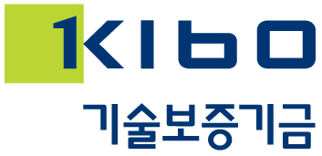
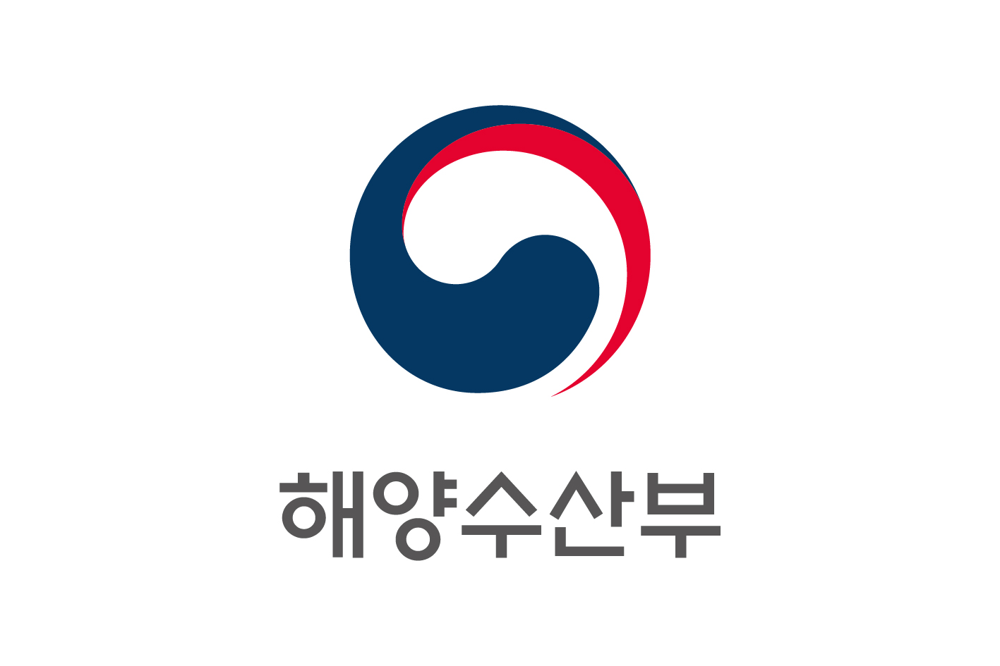
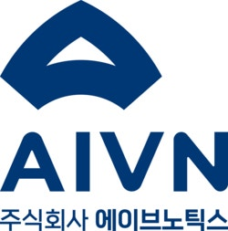
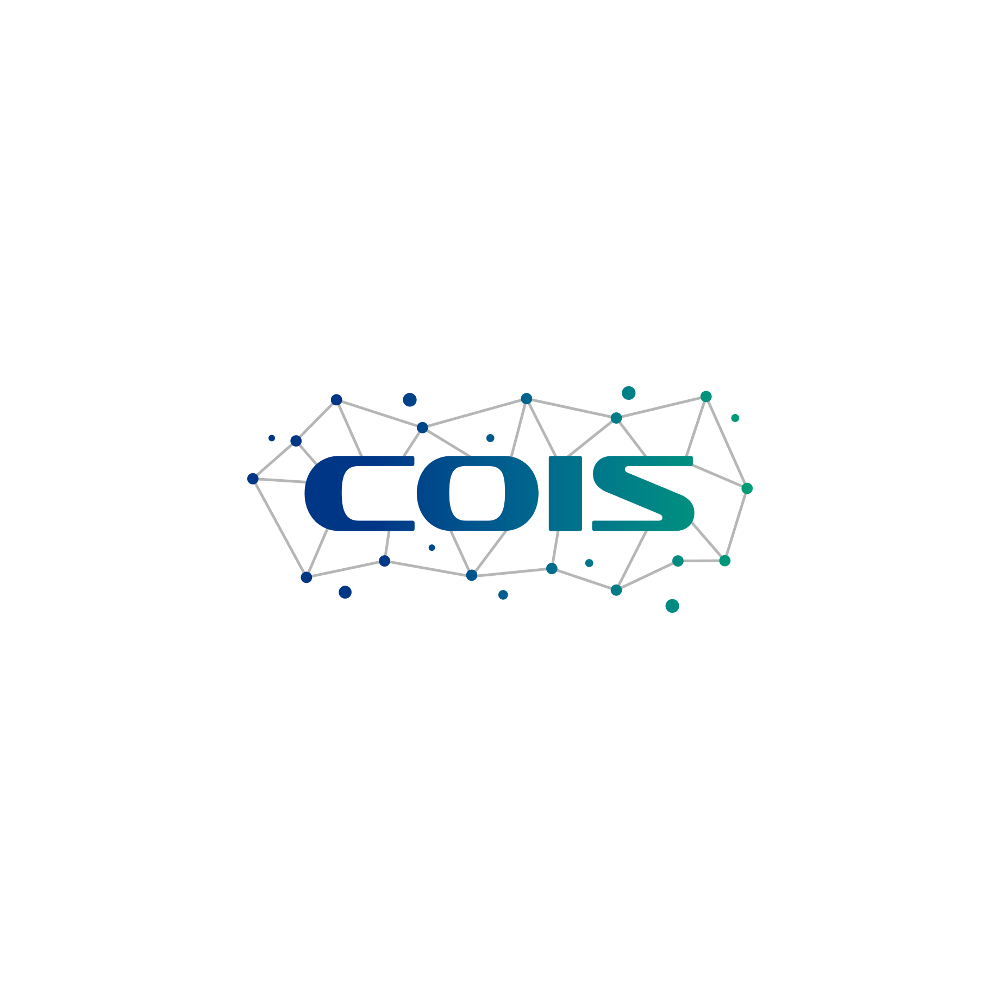

Hoyoung Kim
Industrial engineer working at the intersection of machine learning and mathematical programming — with applications in industrial systems, credit assessment, and technology opportunity analysis.
Download CV (PDF)About
I am an M.S. researcher at the Computational Optimization for Intelligent Systems Lab in the Department of Industrial Engineering at Dankook University. My research focuses on decision-making problems in industrial systems using data-driven prediction and mathematical optimization.
Education
-
M.S. in Industrial EngineeringDankook UniversityMar 2026 — Present
-
B.S. in Management EngineeringDankook UniversityGraduated Feb 2026
Research Interests
-
Machine Learning & Deep Learning
- Predictive modeling for industrial systems
-
Mathematical Programming & Optimization
- Mixed-integer programming for resource allocation and scheduling
-
Technology Opportunity Analysis & Forecasting
- Patent-driven technology intelligence and vacancy detection
Publications (Domestic)
Conference Talks
-
머신러닝 기반의 연료 소모량 예측을 활용한 선박 속도 최적화
-
스마트 물류 기술 동향 분석을 위한 특허 데이터 기반 토픽모델링 및 기술 기회 분석
Selected Projects
-

Data-Driven FOC Prediction & Speed Optimization
Korea Research Institute of Ships & Ocean Engineering (KRISO) · May 2026 — Nov 2026
Developed an ML-based fuel-oil consumption (FOC) prediction module accounting for real-world maritime environments, and formulated a MILP speed optimization algorithm to minimize total fuel usage across the entire voyage.
-

Credit Rating Model Development and Process Improvement
NICE Information Service · Sep 2025 — Dec 2025
Automated corporate credit rating models based on financial and non-financial data using multivariate statistical analysis, and developed a specialized evaluation framework for the shipping industry.
-

Development of an AI-Based Investment Model & Advancement of the Innovation Growth Capability Model
Korea Technology Finance Corporation (KOTEC) · Jul 2025 — Dec 2025
Analyzed relationships among corporate innovation capabilities from both linear and nonlinear perspectives using machine learning, and developed leading indicators of future innovation and growth potential applicable to early-stage startups.
-

VDES Network Resource Allocation Optimization
Ministry of Oceans and Fisheries · Feb 2025 — Dec 2027
Developed a hierarchical MIP model to optimize base station resources (frequency, TDMA, time slot selection) for VHF Data Exchange Systems.
-

Dynamic Cell Planning (DCP) Algorithm Development
AIVeNautics · Sep 2025 — Nov 2025
Developed a DCP algorithm considering the adoption of satellite-based internet services such as Starlink, incorporating ship-specific broadcasting ranges, traffic characteristics, and channel usage patterns to maximize AIS network coverage through mathematical optimization.
-

Timetable Optimization Service (TOS) Algorithm
Dankook University · Jul 2025
Developed a Gurobi-based scheduling optimization algorithm that reflects user preferences for undergraduate course planning.
Awards & Honors
-
Nov 2025Top Excellence Award — LOGIST 2025 Logistics Paper Competition
-
Nov 2025Encouragement Award — 21st KMAC Management Innovation Competition
-
Nov 2025Beomeun Scholarship Foundation — Scholarship Student
-
Jul 2025Excellence Award — DKU CTL Best Practice Competition
-
2022 — 2026Academic Excellence Awards — Dankook University (성적우수상, 우등상)
Skills
- Programming
- Python, SQL
- Optimization
- Gurobi
- Modeling Tools
- AutoMod, AutoCAD
- Certifications
- SQL Developer (SQLD)